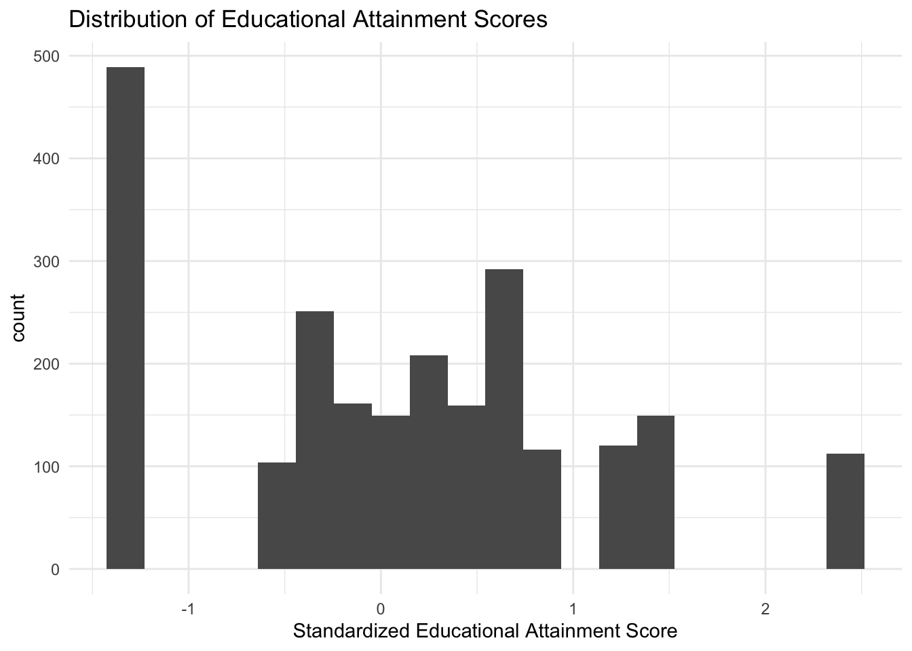
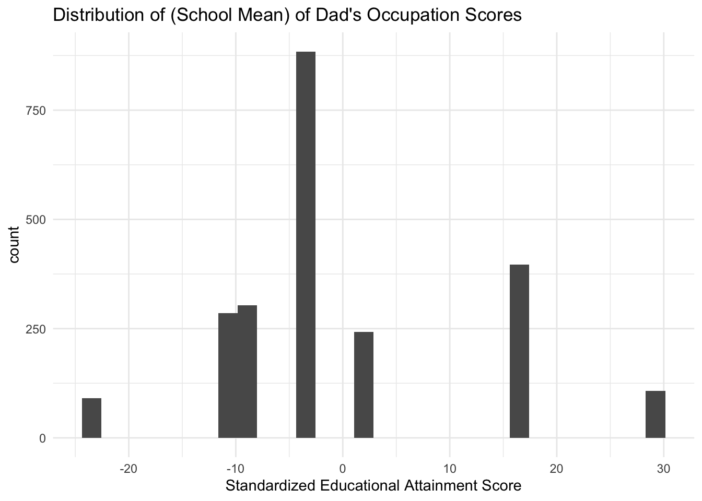
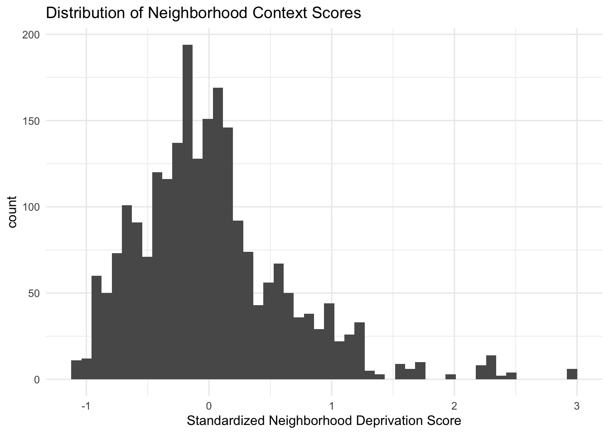
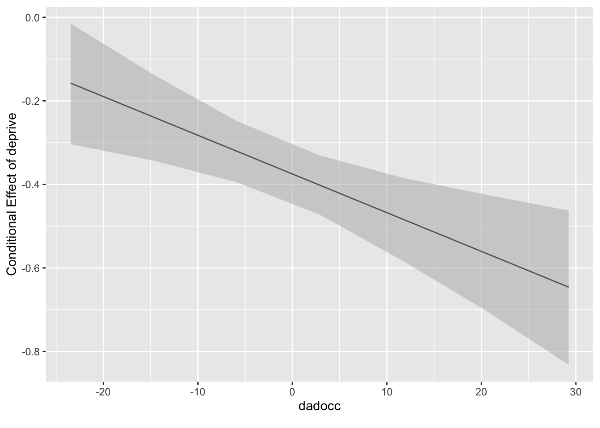

13 Cross-Classified Linear Mixed Models
Data for this chapter: scotland.dta
This week, we will be using George Leckie’s (2009) scotland dataset, which includes 2,310 students, nested within 17 schools and separately nested within 500+ neighborhoods.
Everything so far has assumed a strict hierarchy: each student belongs to one classroom, each classroom to one school, cleanly nested like boxes inside boxes. Real social structures often refuse to cooperate. Students from one neighborhood attend different schools, and each school draws from many neighborhoods. Schools and neighborhoods are crossed, not nested.
13.1 Load in our MVP packages
13.2 Part 1: loading in the data, and then recoding variables
13.2.1 Load in the data
Rows: 2,310
Columns: 11
$ neighid <dbl> 26, 26, 26, 26, 26, 27, 29, 29, 29, 29, 29, 29, 29, 29, 29, 3…
$ schid <dbl> 20, 20, 20, 20, 20, 20, 18, 20, 20, 20, 20, 20, 20, 20, 20, 2…
$ attain <dbl> 1.5177, -1.3276, 0.5610, 1.5177, -1.3276, -0.1325, 0.0293, 0.…
$ p7vrq <dbl> 17.972, -10.028, 2.972, 1.972, -1.028, 3.972, 8.972, -0.028, …
$ p7read <dbl> 17.134, -27.866, 6.134, 11.134, -0.866, -0.866, 6.134, -5.866…
$ dadocc <dbl> 16.196, -3.454, 2.316, -9.094, -3.454, -3.454, 16.196, -3.454…
$ dadunemp <dbl> 0, 0, 0, 0, 0, 0, 0, 0, 0, 0, 0, 0, 0, 0, 0, 0, 0, 0, 0, 0, 0…
$ daded <dbl> 0, 0, 0, 0, 0, 0, 1, 0, 0, 0, 0, 0, 0, 0, 0, 1, 0, 1, 0, 0, 0…
$ momed <dbl> 0, 0, 0, 0, 0, 1, 1, 0, 0, 0, 0, 0, 0, 0, 0, 0, 0, 1, 0, 0, 0…
$ male <dbl> 1, 0, 0, 0, 1, 0, 1, 0, 1, 0, 0, 0, 1, 0, 1, 1, 1, 1, 1, 1, 1…
$ deprive <dbl> -0.551, -0.551, -0.551, -0.551, -0.551, 0.147, -0.083, -0.083…
13.2.2 The describe function from Hmisc is a great codebook
describe(scotland)scotland
11 Variables 2310 Observations
--------------------------------------------------------------------------------
neighid Format:%12.0g
n missing distinct Info Mean pMedian Gmd .05
2310 0 524 1 495.3 489 305.5 61.0
.10 .25 .50 .75 .90 .95
143.9 240.2 530.0 707.0 808.0 861.0
lowest : 26 27 29 30 31, highest: 1092 1095 1096 1097 1098
--------------------------------------------------------------------------------
schid Format:%12.0g
n missing distinct Info Mean pMedian Gmd .05
2310 0 17 0.995 10.01 10 7.174 0
.10 .25 .50 .75 .90 .95
2 5 9 16 19 20
Value 0 1 2 3 5 6 7 8 9 10 13
Frequency 146 22 146 159 155 101 286 112 136 133 92
Proportion 0.063 0.010 0.063 0.069 0.067 0.044 0.124 0.048 0.059 0.058 0.040
Value 15 16 17 18 19 20
Frequency 190 111 154 91 102 174
Proportion 0.082 0.048 0.067 0.039 0.044 0.075
--------------------------------------------------------------------------------
attain Format:%12.0g
n missing distinct Info Mean pMedian Gmd .05
2310 0 14 0.987 0.0934 0.09505 1.124 -1.3276
.10 .25 .50 .75 .90 .95
-1.3276 -0.5812 0.1582 0.7350 1.5177 1.5177
Value -1.3276 -0.5812 -0.3600 -0.1325 0.0293 0.1582 0.2641 0.3917
Frequency 489 104 251 161 149 112 96 159
Proportion 0.212 0.045 0.109 0.070 0.065 0.048 0.042 0.069
Value 0.5610 0.7350 0.9127 1.1405 1.5177 2.4151
Frequency 153 139 116 120 149 112
Proportion 0.066 0.060 0.050 0.052 0.065 0.048
--------------------------------------------------------------------------------
p7vrq Format:%12.0g
n missing distinct Info Mean pMedian Gmd .05
2310 0 68 0.999 0.5058 0.472 11.95 -17.028
.10 .25 .50 .75 .90 .95
-13.028 -7.028 -0.028 7.972 13.972 16.972
lowest : -27.028 -26.028 -25.028 -24.028 -23.028
highest: 35.972 36.972 40.972 41.972 42.972
--------------------------------------------------------------------------------
p7read Format:%12.0g
n missing distinct Info Mean pMedian Gmd .05
2310 0 61 1 -0.04435 0.134 15.8 -23.866
.10 .25 .50 .75 .90 .95
-17.866 -9.866 -0.866 9.134 19.134 24.134
lowest : -31.866 -30.866 -29.866 -28.866 -27.866
highest: 24.134 25.134 26.134 27.134 28.134
--------------------------------------------------------------------------------
dadocc Format:%12.0g
n missing distinct Info Mean pMedian Gmd
2310 0 7 0.933 -0.4642 -3.454 12.33
Value -23.454 -11.494 -9.094 -3.454 2.316 16.196 29.226
Frequency 91 285 303 884 242 397 108
Proportion 0.039 0.123 0.131 0.383 0.105 0.172 0.047
--------------------------------------------------------------------------------
dadunemp Format:%12.0g
n missing distinct Info Sum Mean
2310 0 2 0.292 252 0.1091
--------------------------------------------------------------------------------
daded Format:%12.0g
n missing distinct Info Sum Mean
2310 0 2 0.507 497 0.2152
--------------------------------------------------------------------------------
momed Format:%12.0g
n missing distinct Info Sum Mean
2310 0 2 0.56 574 0.2485
--------------------------------------------------------------------------------
male Format:%12.0g
n missing distinct Info Sum Mean
2310 0 2 0.749 1109 0.4801
--------------------------------------------------------------------------------
deprive Format:%12.0g
n missing distinct Info Mean pMedian Gmd .05
2310 0 458 1 0.02167 -0.0335 0.6664 -0.8250
.10 .25 .50 .75 .90 .95
-0.6930 -0.3970 -0.0620 0.2957 0.8410 1.1400
lowest : -1.082 -1.048 -1.03 -0.983 -0.975, highest: 2.33 2.419 2.438 2.498 2.959
--------------------------------------------------------------------------------13.3 Part one: data exploration and coding/labelling
13.3.1 Start with variable labelling using the label function
label(scotland$neighid)="Neighborhood ID"
label(scotland$schid)="School ID"
label(scotland$attain)="Student Measure of Educational Attainment"
label(scotland$p7vrq)="Primary 7 Verbal Reasoning Quotient"
label(scotland$p7read)="Primary 7 Reading Test Scores"
label(scotland$dadocc)="School Mean of Dad's Occupation Score on Hope-Goldthorpe Scale"
label(scotland$dadunemp)="Dad Currently Unemployed"
label(scotland$daded)="Dad School After Age 15"
label(scotland$momed)="Mom School After Age 15"
label(scotland$male)="Male"
label(scotland$deprive)="Neighborhood Deprivation Score (Poverty, Health, and Housing)"Labelling every variable at the start is a small investment that pays off repeatedly. Six months from now, p7vrq will mean nothing to you, and the label will.
Note one label in particular: dadocc is described as a school mean, not an individual measure. That makes it a level-2 variable, and it explains why it enters the models later as a school-level predictor. Reading labels carefully is how you avoid modeling a group characteristic as though it were an individual one.
scot.clean <- scotland %>%
mutate(.,
dadunemp.fac = as_factor(dadunemp),
daded.fac = as_factor(daded),
momed.fac = as_factor(momed),
male.fac = as_factor(male))
levels(scot.clean$dadunemp.fac) = c("No","Yes")
levels(scot.clean$daded.fac) = c("No","Yes")
levels(scot.clean$momed.fac) = c("No","Yes")
levels(scot.clean$male.fac) = c("No","Yes")
glimpse(scot.clean)Rows: 2,310
Columns: 15
$ neighid <labelled> 26, 26, 26, 26, 26, 27, 29, 29, 29, 29, 29, 29, 29, …
$ schid <labelled> 20, 20, 20, 20, 20, 20, 18, 20, 20, 20, 20, 20, 20, …
$ attain <labelled> 1.5177, -1.3276, 0.5610, 1.5177, -1.3276, -0.1325, 0…
$ p7vrq <labelled> 17.972, -10.028, 2.972, 1.972, -1.028, 3.972, 8.972,…
$ p7read <labelled> 17.134, -27.866, 6.134, 11.134, -0.866, -0.866, 6.13…
$ dadocc <labelled> 16.196, -3.454, 2.316, -9.094, -3.454, -3.454, 16.19…
$ dadunemp <labelled> 0, 0, 0, 0, 0, 0, 0, 0, 0, 0, 0, 0, 0, 0, 0, 0, 0, 0…
$ daded <labelled> 0, 0, 0, 0, 0, 0, 1, 0, 0, 0, 0, 0, 0, 0, 0, 1, 0, 1…
$ momed <labelled> 0, 0, 0, 0, 0, 1, 1, 0, 0, 0, 0, 0, 0, 0, 0, 0, 0, 1…
$ male <labelled> 1, 0, 0, 0, 1, 0, 1, 0, 1, 0, 0, 0, 1, 0, 1, 1, 1, 1…
$ deprive <labelled> -0.551, -0.551, -0.551, -0.551, -0.551, 0.147, -0.08…
$ dadunemp.fac <fct> No, No, No, No, No, No, No, No, No, No, No, No, No, No, N…
$ daded.fac <fct> No, No, No, No, No, No, Yes, No, No, No, No, No, No, No, …
$ momed.fac <fct> No, No, No, No, No, Yes, Yes, No, No, No, No, No, No, No,…
$ male.fac <fct> Yes, No, No, No, Yes, No, Yes, No, Yes, No, No, No, Yes, …Two steps again: as_factor() converts to a factor, then assigning to levels() renames the categories. The names are applied in the order R already has the levels, so this assumes 0 comes first. Worth verifying with table() on any variable where you are unsure, since reversed labels would silently flip the sign of every associated coefficient.
describe(scot.clean)scot.clean
15 Variables 2310 Observations
--------------------------------------------------------------------------------
neighid : Neighborhood ID Format:%12.0g
n missing distinct Info Mean pMedian Gmd .05
2310 0 524 1 495.3 489 305.5 61.0
.10 .25 .50 .75 .90 .95
143.9 240.2 530.0 707.0 808.0 861.0
lowest : 26 27 29 30 31, highest: 1092 1095 1096 1097 1098
--------------------------------------------------------------------------------
schid : School ID Format:%12.0g
n missing distinct Info Mean pMedian Gmd .05
2310 0 17 0.995 10.01 10 7.174 0
.10 .25 .50 .75 .90 .95
2 5 9 16 19 20
Value 0 1 2 3 5 6 7 8 9 10 13
Frequency 146 22 146 159 155 101 286 112 136 133 92
Proportion 0.063 0.010 0.063 0.069 0.067 0.044 0.124 0.048 0.059 0.058 0.040
Value 15 16 17 18 19 20
Frequency 190 111 154 91 102 174
Proportion 0.082 0.048 0.067 0.039 0.044 0.075
--------------------------------------------------------------------------------
attain : Student Measure of Educational Attainment Format:%12.0g
n missing distinct Info Mean pMedian Gmd .05
2310 0 14 0.987 0.0934 0.09505 1.124 -1.3276
.10 .25 .50 .75 .90 .95
-1.3276 -0.5812 0.1582 0.7350 1.5177 1.5177
Value -1.3276 -0.5812 -0.3600 -0.1325 0.0293 0.1582 0.2641 0.3917
Frequency 489 104 251 161 149 112 96 159
Proportion 0.212 0.045 0.109 0.070 0.065 0.048 0.042 0.069
Value 0.5610 0.7350 0.9127 1.1405 1.5177 2.4151
Frequency 153 139 116 120 149 112
Proportion 0.066 0.060 0.050 0.052 0.065 0.048
--------------------------------------------------------------------------------
p7vrq : Primary 7 Verbal Reasoning Quotient Format:%12.0g
n missing distinct Info Mean pMedian Gmd .05
2310 0 68 0.999 0.5058 0.472 11.95 -17.028
.10 .25 .50 .75 .90 .95
-13.028 -7.028 -0.028 7.972 13.972 16.972
lowest : -27.028 -26.028 -25.028 -24.028 -23.028
highest: 35.972 36.972 40.972 41.972 42.972
--------------------------------------------------------------------------------
p7read : Primary 7 Reading Test Scores Format:%12.0g
n missing distinct Info Mean pMedian Gmd .05
2310 0 61 1 -0.04435 0.134 15.8 -23.866
.10 .25 .50 .75 .90 .95
-17.866 -9.866 -0.866 9.134 19.134 24.134
lowest : -31.866 -30.866 -29.866 -28.866 -27.866
highest: 24.134 25.134 26.134 27.134 28.134
--------------------------------------------------------------------------------
dadocc : School Mean of Dad's Occupation Score on Hope-Goldthorpe Scale Format:%12.0g
n missing distinct Info Mean pMedian Gmd
2310 0 7 0.933 -0.4642 -3.454 12.33
Value -23.454 -11.494 -9.094 -3.454 2.316 16.196 29.226
Frequency 91 285 303 884 242 397 108
Proportion 0.039 0.123 0.131 0.383 0.105 0.172 0.047
--------------------------------------------------------------------------------
dadunemp : Dad Currently Unemployed Format:%12.0g
n missing distinct Info Sum Mean
2310 0 2 0.292 252 0.1091
--------------------------------------------------------------------------------
daded : Dad School After Age 15 Format:%12.0g
n missing distinct Info Sum Mean
2310 0 2 0.507 497 0.2152
--------------------------------------------------------------------------------
momed : Mom School After Age 15 Format:%12.0g
n missing distinct Info Sum Mean
2310 0 2 0.56 574 0.2485
--------------------------------------------------------------------------------
male : Male Format:%12.0g
n missing distinct Info Sum Mean
2310 0 2 0.749 1109 0.4801
--------------------------------------------------------------------------------
deprive : Neighborhood Deprivation Score (Poverty, Health, and Housing) Format:%12.0g
n missing distinct Info Mean pMedian Gmd .05
2310 0 458 1 0.02167 -0.0335 0.6664 -0.8250
.10 .25 .50 .75 .90 .95
-0.6930 -0.3970 -0.0620 0.2957 0.8410 1.1400
lowest : -1.082 -1.048 -1.03 -0.983 -0.975, highest: 2.33 2.419 2.438 2.498 2.959
--------------------------------------------------------------------------------
dadunemp.fac : Dad Currently Unemployed
n missing distinct
2310 0 2
Value No Yes
Frequency 2058 252
Proportion 0.891 0.109
--------------------------------------------------------------------------------
daded.fac : Dad School After Age 15
n missing distinct
2310 0 2
Value No Yes
Frequency 1813 497
Proportion 0.785 0.215
--------------------------------------------------------------------------------
momed.fac : Mom School After Age 15
n missing distinct
2310 0 2
Value No Yes
Frequency 1736 574
Proportion 0.752 0.248
--------------------------------------------------------------------------------
male.fac : Male
n missing distinct
2310 0 2
Value No Yes
Frequency 1201 1109
Proportion 0.52 0.48
--------------------------------------------------------------------------------
13.3.2 Explore our outcome, attain
ggplot(data = scot.clean, mapping = aes(x = attain)) +
geom_histogram(bins = 20) +
labs(title = "Distribution of Educational Attainment Scores",
x = "Standardized Educational Attainment Score") +
theme_minimal()
13.3.3 Explore a few other predictors
ggplot(data = scot.clean, mapping = aes(x = dadocc)) +
geom_histogram(bins = 30) +
labs(title = "Distribution of (School Mean) of Dad's Occupation Scores",
x = "Standardized Educational Attainment Score") +
theme_minimal()
ggplot(data = scot.clean, mapping = aes(x = deprive)) +
geom_histogram(bins = 50) +
labs(title = "Distribution of Neighborhood Context Scores",
x = "Standardized Neighborhood Deprivation Score") +
theme_minimal()
Because dadocc is a school mean, its histogram has one value repeated for every student in a school. With 17 schools, that means the distribution really contains 17 distinct points, however many bars appear. deprive behaves similarly at the neighborhood level, though with 500-plus neighborhoods it looks much more continuous.
13.4 Part two: modeling
13.4.1 First, run two separate models with school and neighborhood as the L2 clusters
model.null.school <- lmer(attain ~ (1|schid), REML = FALSE, data = scot.clean)
summary(model.null.school)Linear mixed model fit by maximum likelihood ['lmerMod']
Formula: attain ~ (1 | schid)
Data: scot.clean
AIC BIC logLik -2*log(L) df.resid
6448.2 6465.4 -3221.1 6442.2 2307
Scaled residuals:
Min 1Q Median 3Q Max
-2.12306 -0.70227 0.00178 0.60966 2.81884
Random effects:
Groups Name Variance Std.Dev.
schid (Intercept) 0.08874 0.2979
Residual 0.93441 0.9666
Number of obs: 2310, groups: schid, 17
Fixed effects:
Estimate Std. Error t value
(Intercept) 0.08227 0.07568 1.08713.4.2 Calculate school ICC
icc.school <- 0.08874/(0.08874 + 0.93441)
icc.school[1] 0.08673215model.null.neigh <- lmer(attain ~ (1|neighid), REML = FALSE, data = scot.clean)
summary(model.null.neigh)Linear mixed model fit by maximum likelihood ['lmerMod']
Formula: attain ~ (1 | neighid)
Data: scot.clean
AIC BIC logLik -2*log(L) df.resid
6422.0 6439.2 -3208.0 6416.0 2307
Scaled residuals:
Min 1Q Median 3Q Max
-2.33164 -0.65532 0.01513 0.58177 2.96174
Random effects:
Groups Name Variance Std.Dev.
neighid (Intercept) 0.2015 0.4489
Residual 0.8044 0.8969
Number of obs: 2310, groups: neighid, 524
Fixed effects:
Estimate Std. Error t value
(Intercept) 0.08202 0.02844 2.88513.4.3 Calculate neighborhood ICC
icc.neigh <- 0.2015/(0.2015 + 0.8044)
icc.neigh[1] 0.2003181Fitting each grouping structure alone first is worth doing, because the comparison with the combined model below is where the main lesson of this chapter lives.
13.4.4 Now, a null additive cross-classified model
model.null.crossed <- lmer(attain ~ (1|schid) + (1|neighid), REML = FALSE, data = scot.clean)
summary(model.null.crossed)Linear mixed model fit by maximum likelihood ['lmerMod']
Formula: attain ~ (1 | schid) + (1 | neighid)
Data: scot.clean
AIC BIC logLik -2*log(L) df.resid
6364.7 6387.7 -3178.4 6356.7 2306
Scaled residuals:
Min 1Q Median 3Q Max
-2.36115 -0.69814 0.01345 0.58371 2.92697
Random effects:
Groups Name Variance Std.Dev.
neighid (Intercept) 0.14122 0.3758
schid (Intercept) 0.07545 0.2747
Residual 0.79902 0.8939
Number of obs: 2310, groups: neighid, 524; schid, 17
Fixed effects:
Estimate Std. Error t value
(Intercept) 0.07535 0.07222 1.043The syntax is unremarkable, which is part of the point. Two crossed factors are simply two separate random intercept terms joined with +.
Writing (1|schid/neighid) would tell R that neighborhoods are nested within schools, creating a separate random effect for every school-neighborhood combination. That is a different model and, for these data, the wrong one.
The diagnostic question is simple: does every neighborhood send its students to exactly one school? Here the answer is no, which is what makes the structure crossed.
13.4.5 Calculate neighborhood ICC in crossed model
icc.neigh.crossed <- 0.14122/(0.14122 + 0.07545 + 0.79902)
icc.neigh.crossed[1] 0.139038513.4.6 Calculate school ICC in crossed model
icc.school.crossed <- 0.07545/(0.14122 + 0.07545 + 0.79902)
icc.school.crossed[1] 0.07428448Compare these two numbers with the separate-model ICCs above. Both shrink when the two factors are modeled together, and the reason is the central insight of cross-classified modeling.
A single-factor model has nowhere to put the other source of variation. Fit schools alone, and neighborhood differences get absorbed into the school variance, because students in the same school tend to come from overlapping neighborhoods. The school-only model therefore attributes to schools some variation that actually belongs to where children live. Fitting both at once lets each factor account for its own share.
This has direct consequences for school accountability research. A model that ignores neighborhoods will systematically overstate how much schools matter.
Note also the denominator: all three variance components, since the total variance is now split three ways.
13.4.7 Add an L1 predictor, male
model.1 <- lmer(attain ~ male.fac + (1|schid) + (1|neighid), REML = FALSE, data = scot.clean)
summary(model.1)Linear mixed model fit by maximum likelihood ['lmerMod']
Formula: attain ~ male.fac + (1 | schid) + (1 | neighid)
Data: scot.clean
AIC BIC logLik -2*log(L) df.resid
6360.6 6389.3 -3175.3 6350.6 2305
Scaled residuals:
Min 1Q Median 3Q Max
-2.41396 -0.69992 0.00977 0.58312 2.97855
Random effects:
Groups Name Variance Std.Dev.
neighid (Intercept) 0.14113 0.3757
schid (Intercept) 0.07439 0.2727
Residual 0.79681 0.8926
Number of obs: 2310, groups: neighid, 524; schid, 17
Fixed effects:
Estimate Std. Error t value
(Intercept) 0.12206 0.07421 1.645
male.facYes -0.09656 0.03898 -2.477
Correlation of Fixed Effects:
(Intr)
male.facYes -0.254
13.4.8 L1 plus school-level predictor only (dadocc)
model.2 <- lmer(attain ~ male.fac + dadocc + (1|schid) + (1|neighid), REML = FALSE, data = scot.clean)
summary(model.2)Linear mixed model fit by maximum likelihood ['lmerMod']
Formula: attain ~ male.fac + dadocc + (1 | schid) + (1 | neighid)
Data: scot.clean
AIC BIC logLik -2*log(L) df.resid
6146.5 6181.0 -3067.2 6134.5 2304
Scaled residuals:
Min 1Q Median 3Q Max
-2.48797 -0.69407 0.01097 0.59325 3.10701
Random effects:
Groups Name Variance Std.Dev.
neighid (Intercept) 0.07413 0.2723
schid (Intercept) 0.04277 0.2068
Residual 0.76119 0.8725
Number of obs: 2310, groups: neighid, 524; schid, 17
Fixed effects:
Estimate Std. Error t value
(Intercept) 0.139052 0.058591 2.373
male.facYes -0.093390 0.037575 -2.485
dadocc 0.025708 0.001662 15.472
Correlation of Fixed Effects:
(Intr) ml.fcY
male.facYes -0.309
dadocc 0.012 0.008Watch the school variance here rather than the neighborhood variance. A school-level predictor should explain between-school differences, so that is where the movement belongs.
13.4.9 L1 plus neighborhood-level predictors only (deprive)
model.3 <- lmer(attain ~ male.fac + deprive + (1|schid) + (1|neighid), REML = FALSE, data = scot.clean)
summary(model.3)Linear mixed model fit by maximum likelihood ['lmerMod']
Formula: attain ~ male.fac + deprive + (1 | schid) + (1 | neighid)
Data: scot.clean
AIC BIC logLik -2*log(L) df.resid
6238.1 6272.5 -3113.0 6226.1 2304
Scaled residuals:
Min 1Q Median 3Q Max
-2.4480 -0.6746 0.0031 0.5900 3.5529
Random effects:
Groups Name Variance Std.Dev.
neighid (Intercept) 0.06053 0.2460
schid (Intercept) 0.03840 0.1960
Residual 0.80436 0.8969
Number of obs: 2310, groups: neighid, 524; schid, 17
Fixed effects:
Estimate Std. Error t value
(Intercept) 0.14566 0.05638 2.584
male.facYes -0.10269 0.03843 -2.672
deprive -0.46836 0.03820 -12.260
Correlation of Fixed Effects:
(Intr) ml.fcY
male.facYes -0.329
deprive -0.023 0.009And now the mirror image: a neighborhood-level predictor should move the neighborhood variance. Fitting these two separately makes it easy to see which component each predictor is accounting for.
On the deprivation coefficient, a word of caution that applies well beyond these data. Families are not randomly assigned to neighborhoods, and families in more deprived areas differ from others in many ways, some measured here and most not. The coefficient describes an association. It does not establish that moving a child to a less deprived neighborhood would raise their attainment.
13.4.10 L1 plus both school and neighborhood predictors
model.4 <- lmer(attain ~ male.fac + deprive + dadocc + (1|schid) + (1|neighid), REML = FALSE, data = scot.clean)
summary(model.4)Linear mixed model fit by maximum likelihood ['lmerMod']
Formula: attain ~ male.fac + deprive + dadocc + (1 | schid) + (1 | neighid)
Data: scot.clean
AIC BIC logLik -2*log(L) df.resid
6055.3 6095.6 -3020.7 6041.3 2303
Scaled residuals:
Min 1Q Median 3Q Max
-2.6406 -0.6716 0.0152 0.6010 3.5775
Random effects:
Groups Name Variance Std.Dev.
neighid (Intercept) 0.03005 0.1733
schid (Intercept) 0.02313 0.1521
Residual 0.76444 0.8743
Number of obs: 2310, groups: neighid, 524; schid, 17
Fixed effects:
Estimate Std. Error t value
(Intercept) 0.15565 0.04635 3.358
male.facYes -0.09836 0.03709 -2.652
deprive -0.36485 0.03540 -10.306
dadocc 0.02330 0.00166 14.037
Correlation of Fixed Effects:
(Intr) ml.fcY depriv
male.facYes -0.386
deprive -0.022 0.010
dadocc 0.008 0.011 0.224
13.4.11 Test random effects for male.fac at neighborhood level and at school level
model.5 <- lmer(attain ~ male.fac + deprive + dadocc + (male.fac|schid) + (male.fac|neighid), REML = FALSE, data = scot.clean)
summary(model.5)Linear mixed model fit by maximum likelihood ['lmerMod']
Formula:
attain ~ male.fac + deprive + dadocc + (male.fac | schid) + (male.fac |
neighid)
Data: scot.clean
AIC BIC logLik -2*log(L) df.resid
6061.9 6125.1 -3020.0 6039.9 2299
Scaled residuals:
Min 1Q Median 3Q Max
-2.6546 -0.6662 0.0194 0.6131 3.5924
Random effects:
Groups Name Variance Std.Dev. Corr
neighid (Intercept) 0.035552 0.18855
male.facYes 0.014215 0.11923 -0.37
schid (Intercept) 0.030595 0.17491
male.facYes 0.008168 0.09037 -0.60
Residual 0.758342 0.87083
Number of obs: 2310, groups: neighid, 524; schid, 17
Fixed effects:
Estimate Std. Error t value
(Intercept) 0.154424 0.051224 3.015
male.facYes -0.095598 0.044000 -2.173
deprive -0.364447 0.035435 -10.285
dadocc 0.023301 0.001659 14.042
Correlation of Fixed Effects:
(Intr) ml.fcY depriv
male.facYes -0.568
deprive -0.022 0.011
dadocc 0.005 0.013 0.225lmerTest::rand(model.5)ANOVA-like table for random-effects: Single term deletions
Model:
attain ~ male.fac + deprive + dadocc + (male.fac | schid) + (male.fac | neighid)
npar logLik AIC LRT Df Pr(>Chisq)
<none> 11 -3020.0 6061.9
male.fac in (male.fac | schid) 9 -3020.5 6059.1 1.11528 2 0.5726
male.fac in (male.fac | neighid) 9 -3020.0 6058.1 0.11792 2 0.9427This asks whether the gender gap in attainment differs across schools, across neighborhoods, or both. rand() tests each random term separately, so the two can come out differently.
Expect trouble here, and read it as information. Estimating a slope variance across 17 schools is asking a great deal of very little data, so a singular fit or a boundary estimate would not be surprising. The neighborhood version rests on far more units and is on firmer ground.
13.4.12 Finally, test a model with school-neighborhood interaction
model.6 <- lmer(attain ~ male.fac + deprive + dadocc + deprive:dadocc + (1|schid) + (1|neighid), REML = FALSE, data = scot.clean)
summary(model.6)Linear mixed model fit by maximum likelihood ['lmerMod']
Formula: attain ~ male.fac + deprive + dadocc + deprive:dadocc + (1 |
schid) + (1 | neighid)
Data: scot.clean
AIC BIC logLik -2*log(L) df.resid
6046.5 6092.5 -3015.3 6030.5 2302
Scaled residuals:
Min 1Q Median 3Q Max
-2.7227 -0.6989 0.0235 0.6097 3.5774
Random effects:
Groups Name Variance Std.Dev.
neighid (Intercept) 0.02719 0.1649
schid (Intercept) 0.02192 0.1481
Residual 0.76333 0.8737
Number of obs: 2310, groups: neighid, 524; schid, 17
Fixed effects:
Estimate Std. Error t value
(Intercept) 0.140420 0.045710 3.072
male.facYes -0.105781 0.037087 -2.852
deprive -0.374940 0.035199 -10.652
dadocc 0.022321 0.001686 13.243
deprive:dadocc -0.009277 0.002808 -3.303
Correlation of Fixed Effects:
(Intr) ml.fcY depriv dadocc
male.facYes -0.383
deprive -0.013 0.014
dadocc 0.027 0.022 0.237
depriv:ddcc 0.104 0.060 0.082 0.187This interaction is unusual and worth stating carefully. It crosses a neighborhood-level variable with a school-level variable, asking whether the effect of neighborhood deprivation depends on the socioeconomic composition of the school a child attends. Does attending a more advantaged school buffer the association between a deprived neighborhood and attainment? That is a genuinely interesting policy question, and it is only askable in a cross-classified framework.
13.4.13 Use interplot to visualize the interaction between deprive and dadocc
interplot::interplot(model.6, var1 = "deprive", var2 = "dadocc")
Read the axes carefully. The vertical axis is the coefficient on deprive, not a predicted attainment score, and the horizontal axis moves across values of dadocc. So the line shows how the deprivation effect changes depending on school composition. A downward-sloping line would mean deprivation matters less in more advantaged schools, which is the buffering hypothesis.
13.5 Comparing the models
library(modelsummary)
library(broom.mixed)
models <- list(model.null.neigh, model.null.school, model.null.crossed, model.1, model.2, model.3, model.4, model.5, model.6)
modelsummary(models, output = "markdown")| (Intercept) | 0.082 | 0.082 | 0.075 | 0.122 | 0.139 | 0.146 | 0.156 | 0.154 | 0.140 |
| (0.028) | (0.076) | (0.072) | (0.074) | (0.059) | (0.056) | (0.046) | (0.051) | (0.046) | |
| male.facYes | -0.097 | -0.093 | -0.103 | -0.098 | -0.096 | -0.106 | |||
| (0.039) | (0.038) | (0.038) | (0.037) | (0.044) | (0.037) | ||||
| dadocc | 0.026 | 0.023 | 0.023 | 0.022 | |||||
| (0.002) | (0.002) | (0.002) | (0.002) | ||||||
| deprive | -0.468 | -0.365 | -0.364 | -0.375 | |||||
| (0.038) | (0.035) | (0.035) | (0.035) | ||||||
| deprive × dadocc | -0.009 | ||||||||
| (0.003) | |||||||||
| SD (Observations) | 0.897 | 0.967 | 0.894 | 0.893 | 0.872 | 0.897 | 0.874 | 0.871 | 0.874 |
| SD (Intercept neighid) | 0.449 | 0.376 | 0.376 | 0.272 | 0.246 | 0.173 | 0.189 | 0.165 | |
| SD (male.facYes neighid) | 0.119 | ||||||||
| Cor (Intercept~male.facYes neighid) | -0.375 | ||||||||
| SD (Intercept schid) | 0.298 | 0.275 | 0.273 | 0.207 | 0.196 | 0.152 | 0.175 | 0.148 | |
| SD (male.facYes schid) | 0.090 | ||||||||
| Cor (Intercept~male.facYes schid) | -0.602 | ||||||||
| Num.Obs. | 2310 | 2310 | 2310 | 2310 | 2310 | 2310 | 2310 | 2310 | 2310 |
| R2 Marg. | 0.000 | 0.000 | 0.000 | 0.002 | 0.097 | 0.088 | 0.168 | 0.167 | 0.173 |
| R2 Cond. | 0.200 | 0.087 | 0.213 | 0.215 | 0.217 | 0.188 | 0.222 | 0.228 | 0.223 |
| AIC | 6427.3 | 6451.5 | 6368.1 | 6368.7 | 6166.1 | 6251.5 | 6080.4 | 6086.7 | 6081.6 |
| BIC | 6444.5 | 6468.7 | 6391.1 | 6397.4 | 6200.6 | 6285.9 | 6120.6 | 6149.9 | 6127.5 |
| ICC | 0.2 | 0.1 | 0.2 | 0.2 | 0.1 | 0.1 | 0.1 | 0.1 | 0.1 |
| RMSE | 0.85 | 0.96 | 0.85 | 0.85 | 0.84 | 0.87 | 0.86 | 0.85 | 0.86 |
13.6 A caution about 17 schools
With only 17 schools, the school-level variance is estimated from very little information. Variance components need a reasonable number of higher-level units to be estimated precisely, and common rules of thumb want at least 30 to 50. The neighborhood variance, resting on 500-plus units, is on much firmer ground.
This asymmetry should shape how you write up the results. Report both variances, but attach appropriate uncertainty to claims about schools. A school-level variance that appears smaller than the neighborhood variance may reflect a genuine difference, or it may reflect that 17 units cannot pin down a variance with much precision.
13.7 Recognizing this structure elsewhere
Cross-classification is more common than it looks once you start watching for it. Students crossed with teachers across multiple years. Patients crossed with hospitals and with surgeons who operate at several hospitals. Employees crossed with firms and with occupations. Survey respondents crossed with interviewers and with geographic areas.
The diagnostic question is simple. Does every unit in group A belong to exactly one unit in group B? If yes, the structure is nested. If units in A spread across multiple units in B, it is crossed, and modeling it as nested will misattribute variance between the two.